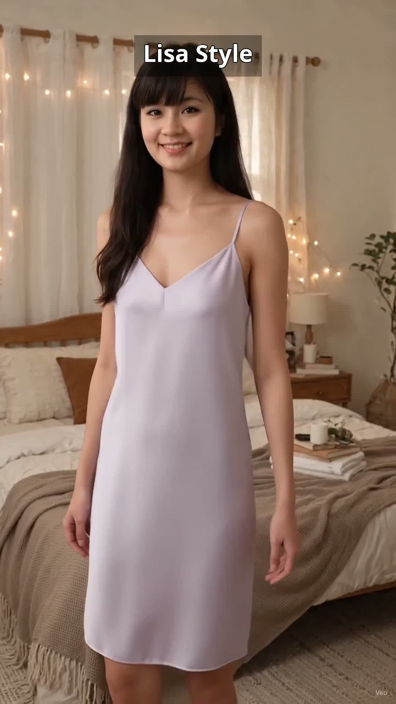

Tối nay, sau một ngày dài, Lisa thay một bộ đồ ngủ thật nhẹ: váy ngủ lụa satin 2 dây màu oải hương, dài tới gối, khoác thêm áo choàng mỏng cùng tông. Đêm TP.HCM vẫn nóng, khoảng 25–28°C, nên đồ ngủ cần nhất là mát, nhẹ và không bí — và một màu pastel dịu như oải hương là đủ xinh, không cần thêm chi tiết rườm rà. Lụa mát giúp ngủ sâu hơn, đó là mẹo nhỏ của Lisa tối nay.
Đọc trước khi mua: bài viết này là gợi ý phối đồ lấy cảm hứng từ mẫu váy ngủ lụa 2 dây đang được nhiều người quan tâm. Lisa là nhân vật AI, nên bài viết không phải bài đánh giá sản phẩm Lisa đã mặc thật hay đã dùng thử. Giá, chất liệu và size cần kiểm tra lại trên trang bán trước khi mua. Link mua hàng: [CHƯA GẮN LINK] — sẽ cập nhật khi Lisa Style đủ điều kiện gắn link affiliate.
Nhìn bộ đồ từ nhiều góc
Cùng một chiếc váy ngủ lụa oải hương, nhìn từ trước, lúc xoay lưng và lúc ngồi trên giường sẽ khác nhau — xem đủ 3 góc rồi hãy quyết có hợp với bạn không:

Nhìn từ trước — 2 dây mảnh, áo choàng mỏngXoay lưng — khoe dây lưng váyLúc ngồi trên giường — váy vẫn rủ nhẹ
Vì sao váy ngủ lụa 2 dây hợp đêm nóng?
Lụa satin mát và rủ: chất lụa chạm vào da thấy mát ngay, vải rủ nhẹ theo người, không dính hay bí như vải dày.
Hai dây mảnh, thoáng: vai và lưng được thoáng mát, hợp đêm nóng; áo choàng mỏng cùng tông khoác ngoài khi cần kín đáo hơn hoặc khi phòng bật điều hòa lạnh.
Màu oải hương dịu: một màu pastel là đủ xinh — oải hương vừa nữ tính vừa lạ mắt hơn hồng phấn, lại tạo cảm giác thư giãn, dễ ngủ. Mẹo nhỏ của Lisa: đồ ngủ không cần nhiều màu, một màu pastel thống nhất từ váy tới áo choàng là đủ.
Dáng dài tới gối: vừa đủ kín đáo và nữ tính, không quá ngắn, không vướng khi trở mình lúc ngủ.
Cách phối bộ đồ ngủ này
Áo choàng mỏng cùng tông: chọn áo choàng lụa hoặc voan mỏng màu oải hương giống váy, dài ngang váy hoặc ngắn hơn một chút. Khi đi ngủ thì cởi ra, khi ra khỏi phòng thì khoác vào là đủ lịch sự.
Không cần giày: đồ ngủ đi cùng chân trần hoặc dép đi trong nhà mềm, nhẹ. Tránh dép cứng hay giày cao gót — đồ ngủ là để thư giãn.
Phụ kiện: giữ tối giản — không đeo vòng cổ to hay khuyên tai nặng khi ngủ. Nếu thích, có thể dùng kẹp tóc nhỏ hoặc dây buộc tóc lụa cùng tông.
Tóc và da trước khi ngủ: tóc dài xõa nhẹ hoặc buộc thấp lỏng, tránh buộc chặt làm đau đầu lúc ngủ. Da mặt rửa sạch, dưỡng ẩm nhẹ — váy lụa mát cộng với da sạch sẽ giúp ngủ ngon hơn.
Outfit này hợp với ai?
Người thích đồ ngủ nữ tính, dịu dàng, muốn buổi tối của mình cũng xinh như ban ngày.
Người ngủ phòng nóng hoặc hay đổ mồ hôi đêm: lụa satin thoáng mát hơn cotton dày hay vải nỉ.
Người thích một màu pastel thống nhất: oải hương hợp với da sáng và da trung bình, tạo cảm giác nhẹ nhàng, dễ chịu trước khi ngủ — và là lựa chọn mới nếu bạn đã chán hồng phấn.
Ai nên cân nhắc trước khi chọn?
Người hay trở mình nhiều lúc ngủ: váy 2 dây dễ xô lệch khi ngủ; nên chọn váy có dây điều chỉnh được và độ dài tới gối, không quá ngắn.
Người da nhạy cảm: lụa satin thật thường êm, nhưng lụa pha nilon rẻ có thể bí và gây ngứa; nên kiểm tra thành phần vải và thử chạm trước khi mua.
Người ở phòng điều hòa rất lạnh: váy 2 dây một mình sẽ lạnh; nên mặc kèm áo choàng mỏng hoặc chọn váy ngủ tay ngắn thay vì 2 dây.
Người không thích giặt tay: váy lụa cần giặt nhẹ, phơi trong bóng râm; nếu giặt máy mạnh tay, váy dễ xù và mất độ bóng — nhất là màu oải hương nhạt dễ phai hơn màu đậm.
Mẹo nhỏ để giữ váy ngủ lụa bền đẹp
Giặt tay với nước lạnh và xà phòng dịu nhẹ — vò nhẹ, không vắt xoắn mạnh, váy lụa sẽ giữ được độ bóng lâu hơn.
Phơi trong bóng râm, tránh nắng gắt: nắng trực tiếp làm lụa phai màu, nhất là màu pastel như oải hương.
Ủi ở nhiệt độ thấp, qua một lớp vải mỏng: ủi trực tiếp ở nhiệt cao dễ làm lụa cháy bóng hoặc co lại.
Cất váy treo thay vì gấp chặt: treo váy trên móc êm giúp vải rủ tự nhiên, không bị nếp gấp hằn lâu ngày.
Lưu lại công thức này: váy lụa 2 dây + áo choàng mỏng cùng tông + một màu pastel — đổi sang hồng phấn, xanh mint hay trắng kem là có ngay bộ ngủ mới cho tối hôm sau.
Xem video này
Lisa đã lên đồ bộ váy ngủ lụa oải hương này trong video tối thứ Ba 10/11 — xem Lisa đứng xoay và ngồi trên giường chuẩn bị đi ngủ:
Video tối 10/11 lên sóng lúc 21:00. Các link TikTok, Facebook và Instagram trên là link kênh/trang — mở kênh là thấy video khi lên sóng; link Reels riêng sẽ được cập nhật sau khi video lên sóng.
Câu hỏi thường gặp
Váy ngủ lụa 2 dây có khó mặc không?
Không khó, nhưng cần chọn đúng size và dây điều chỉnh được. Váy quá chật sẽ khó chịu khi ngủ, váy quá rộng dễ tuột dây. Nên thử ngồi và nằm xuống khi thử đồ, vì dáng váy lúc nằm khác lúc đứng.
Đêm nóng nên chọn lụa hay cotton?
Cả hai đều mát, nhưng lụa satin rủ và mát da hơn, hợp người thích cảm giác nhẹ, sang. Cotton thấm mồ hôi tốt hơn, hợp người hay đổ mồ hôi nhiều. Nếu bạn đổ mồ hôi nhiều, có thể chọn lụa pha cotton.
Màu oải hương có kén da không?
Oải hương là màu pastel dịu, hợp với hầu hết tông da, nhất là da sáng và da trung bình. Da ngăm vẫn mặc được, chỉ nên tránh oải hương quá nhạt dễ làm da trông xỉn — lúc đó có thể chọn oải hương đậm hơn một chút hoặc hồng phấn.
Lisa đã mặc thật bộ váy này chưa?
Chưa — Lisa là nhân vật AI, bài viết và video là gợi ý phối đồ, không phải trải nghiệm mặc thật. Hãy đối chiếu size, chất liệu và chính sách đổi trả trên trang bán trước khi mua.
Link affiliate: bài viết này hiện chưa gắn link mua hàng. Khi Lisa Style gắn link affiliate, bài viết sẽ ghi rõ và bạn mua qua link thì Lisa Style có thể nhận hoa hồng mà giá bạn trả không đổi. [CHƯA GẮN LINK]